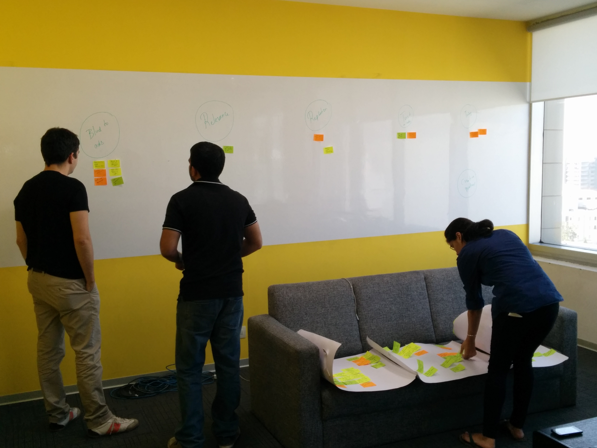
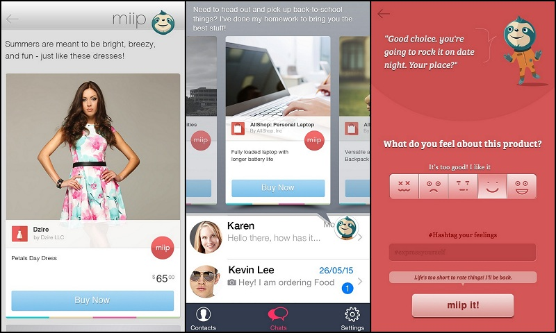
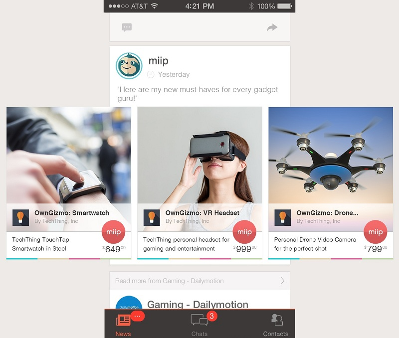

MIIP - Redefining Ad Experiences
Discovery platform to redefine ad experiences in mobile ads
Duration:
2 months
Type:
Internship Work
Roles and Responsibilities:
UX Design, Project Management
The Goal
Ads today have forgotten the protagonist of the story – the user. With Miip, we will put the user ahead of everyone else and deliver a consistent, personalized, and content-rich experience that users will fall in love with.
Why
Why the renewed focus on Ads? - People don’t like mobile ads, hence a new take on mobile ads is always welcome. In this effort, the metaphor of catalog has been used to come up with new templates - This is a difficult (hence awesome) effort in behavioral change when it comes to interacting with mobile ads. - To accomplish this, we need the right motivation for users to pursue the catalog (pitch & design) and the right amount/frequency of triggers to continue pursuing it (ad-serving) - Humans are mostly visual, irrational and can rarely multitask. Exceptions are there but in the case of mobile it holds true and needs to be used to alter templates
How
Miip creates discovery zones for consumers within their apps and presents a curated collection of product feeds, apps and related content with visuals. Personified through a mascot of the same name, Miip aims to humanize the discovery experience through a series of engaging and dynamic conversations. Miip learns and refines its recommendations over time through reactions and emotions expressed by the consumer within the discovery zone
Unlike traditional push-based advertising, Miip will capture a consumer’s attention through stories stitched together based on a unifying theme. For instance, a user who likes rock music will see an intelligently crafted story with curated recommendations across relevant merchandise, track reviews, concert tickets, music equipment or trending rock collections, all within one discovery zone. Miip extracts content from other existing apps and makes them accessible within the discovery zone. Consumers can also ‘buy’ products within the discovery zone through secure payments enabled by Stripe, the partner powering payments for Miip.
Design Process
We started off with studying the existing desktop system and interviewing users to identify their
needs and problems.

We followed a highly iterative process right from ideation phase. We created paper prototypes to discuss our initial design ideas.
Later, we created Balsamiq mockups of the screens and designed the interactions in detail.

Towards the end, we designed high-fidelity visuals of a few screens to define the visual language and created a prototype for discussion with the development teams.
Challenges and Design
Designing for ad experiences has always been a highly challengin process. It is very difficult process especially because there is a fundamental aversion towards ads. And simulaiting an environment for wualitative testing seemed to be very difficult.
The work around was quantative testing and shadowing users in real life environent. We were able to
iteratively work on multiple dimensions like end to end experience, animations, interactions and post experience.

